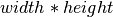
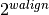
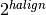
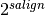
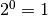

2.26. V4L2 common functions and data structures¶
-
int
v4l2_ctrl_query_fill(struct v4l2_queryctrl *qctrl, s32 min, s32 max, s32 step, s32 def)¶ Fill in a
struct v4l2_queryctrl
Parameters
struct v4l2_queryctrl *qctrlpointer to the
struct v4l2_queryctrlto be filleds32 minminimum value for the control
s32 maxmaximum value for the control
s32 stepcontrol step
s32 defdefault value for the control
Description
Fills the struct v4l2_queryctrl fields for the query control.
Note
This function assumes that the qctrl->id field is filled.
Returns -EINVAL if the control is not known by the V4L2 core, 0 on success.
-
enum
v4l2_i2c_tuner_type¶ specifies the range of tuner address that should be used when seeking for I2C devices.
Constants
ADDRS_RADIORadio tuner addresses. Represent the following I2C addresses: 0x10 (if compiled with tea5761 support) and 0x60.
ADDRS_DEMODDemod tuner addresses. Represent the following I2C addresses: 0x42, 0x43, 0x4a and 0x4b.
ADDRS_TVTV tuner addresses. Represent the following I2C addresses: 0x42, 0x43, 0x4a, 0x4b, 0x60, 0x61, 0x62, 0x63 and 0x64.
ADDRS_TV_WITH_DEMODTV tuner addresses if demod is present, this excludes addresses used by the demodulator from the list of candidates. Represent the following I2C addresses: 0x60, 0x61, 0x62, 0x63 and 0x64.
NOTE
All I2C addresses above use the 7-bit notation.
-
struct v4l2_subdev *
v4l2_i2c_new_subdev(struct v4l2_device *v4l2_dev, struct i2c_adapter *adapter, const char *client_type, u8 addr, const unsigned short *probe_addrs)¶ Load an i2c module and return an initialized
struct v4l2_subdev.
Parameters
struct v4l2_device *v4l2_devpointer to
struct v4l2_devicestruct i2c_adapter *adapterpointer to struct i2c_adapter
const char *client_typename of the chip that’s on the adapter.
u8 addrI2C address. If zero, it will use probe_addrs
const unsigned short *probe_addrsarray with a list of address. The last entry at such array should be
I2C_CLIENT_END.
Description
returns a struct v4l2_subdev pointer.
-
struct v4l2_subdev *
v4l2_i2c_new_subdev_board(struct v4l2_device *v4l2_dev, struct i2c_adapter *adapter, struct i2c_board_info *info, const unsigned short *probe_addrs)¶ Load an i2c module and return an initialized
struct v4l2_subdev.
Parameters
struct v4l2_device *v4l2_devpointer to
struct v4l2_devicestruct i2c_adapter *adapterpointer to struct i2c_adapter
struct i2c_board_info *infopointer to
struct i2c_board_infoused to replace the irq, platform_data and addr arguments.const unsigned short *probe_addrsarray with a list of address. The last entry at such array should be
I2C_CLIENT_END.
Description
returns a struct v4l2_subdev pointer.
-
void
v4l2_i2c_subdev_set_name(struct v4l2_subdev *sd, struct i2c_client *client, const char *devname, const char *postfix)¶ Set name for an I²C sub-device
Parameters
struct v4l2_subdev *sdpointer to
struct v4l2_subdevstruct i2c_client *clientpointer to
struct i2c_clientconst char *devnamethe name of the device; if NULL, the I²C device drivers’s name will be used
const char *postfixsub-device specific string to put right after the I²C device name; may be NULL
-
void
v4l2_i2c_subdev_init(struct v4l2_subdev *sd, struct i2c_client *client, const struct v4l2_subdev_ops *ops)¶ Initializes a
struct v4l2_subdevwith data from an i2c_client struct.
Parameters
struct v4l2_subdev *sdpointer to
struct v4l2_subdevstruct i2c_client *clientpointer to
struct i2c_clientconst struct v4l2_subdev_ops *opspointer to
struct v4l2_subdev_ops
-
unsigned short
v4l2_i2c_subdev_addr(struct v4l2_subdev *sd)¶ returns i2c client address of
struct v4l2_subdev.
Parameters
struct v4l2_subdev *sdpointer to
struct v4l2_subdev
Description
Returns the address of an I2C sub-device
-
const unsigned short *
v4l2_i2c_tuner_addrs(enum v4l2_i2c_tuner_type type)¶ Return a list of I2C tuner addresses to probe.
Parameters
enum v4l2_i2c_tuner_type typetype of the tuner to seek, as defined by
enum v4l2_i2c_tuner_type.
NOTE
Use only if the tuner addresses are unknown.
-
void
v4l2_i2c_subdev_unregister(struct v4l2_subdev *sd)¶ Unregister a v4l2_subdev
Parameters
struct v4l2_subdev *sdpointer to
struct v4l2_subdev
-
struct v4l2_subdev *
v4l2_spi_new_subdev(struct v4l2_device *v4l2_dev, struct spi_master *master, struct spi_board_info *info)¶ Load an spi module and return an initialized
struct v4l2_subdev.
Parameters
struct v4l2_device *v4l2_devpointer to
struct v4l2_device.struct spi_master *masterpointer to struct spi_master.
struct spi_board_info *infopointer to
struct spi_board_info.
Description
returns a struct v4l2_subdev pointer.
-
void
v4l2_spi_subdev_init(struct v4l2_subdev *sd, struct spi_device *spi, const struct v4l2_subdev_ops *ops)¶ Initialize a v4l2_subdev with data from an spi_device struct.
Parameters
struct v4l2_subdev *sdpointer to
struct v4l2_subdevstruct spi_device *spipointer to
struct spi_device.const struct v4l2_subdev_ops *opspointer to
struct v4l2_subdev_ops
-
void
v4l2_spi_subdev_unregister(struct v4l2_subdev *sd)¶ Unregister a v4l2_subdev
Parameters
struct v4l2_subdev *sdpointer to
struct v4l2_subdev
-
void
v4l_bound_align_image(unsigned int *width, unsigned int wmin, unsigned int wmax, unsigned int walign, unsigned int *height, unsigned int hmin, unsigned int hmax, unsigned int halign, unsigned int salign)¶ adjust video dimensions according to a given constraints.
Parameters
unsigned int *widthpointer to width that will be adjusted if needed.
unsigned int wminminimum width.
unsigned int wmaxmaximum width.
unsigned int walignleast significant bit on width.
unsigned int *heightpointer to height that will be adjusted if needed.
unsigned int hminminimum height.
unsigned int hmaxmaximum height.
unsigned int halignleast significant bit on height.
unsigned int salignleast significant bit for the image size (e. g. ).
Description
Clip an image to have width between wmin and wmax, and height between hmin and hmax, inclusive.
Additionally, the width will be a multiple of , the height will be a multiple of , and the overall size will be a multiple of .
Note
The clipping rectangle may be shrunk or enlarged to fit the alignment constraints.
wmax must not be smaller than wmin.
hmax must not be smaller than hmin.
The alignments must not be so high there are no possible image sizes within the allowed bounds.
wmin and hmin must be at least 1 (don’t use 0).
For walign, halign and salign, if you don’t care about a certain alignment, specify
0, as  and one byte alignment is equivalent to no alignment.If you only want to adjust downward, specify a maximum that’s the same as the initial value.
-
v4l2_find_nearest_size(array, array_size, width_field, height_field, width, height)¶ Find the nearest size among a discrete set of resolutions contained in an array of a driver specific struct.
Parameters
arraya driver specific array of image sizes
array_sizethe length of the driver specific array of image sizes
width_fieldthe name of the width field in the driver specific struct
height_fieldthe name of the height field in the driver specific struct
widthdesired width.
heightdesired height.
Description
Finds the closest resolution to minimize the width and height differences between what requested and the supported resolutions. The size of the width and height fields in the driver specific must equal to that of u32, i.e. four bytes.
Returns the best match or NULL if the length of the array is zero.
-
int
v4l2_g_parm_cap(struct video_device *vdev, struct v4l2_subdev *sd, struct v4l2_streamparm *a)¶ helper routine for vidioc_g_parm to fill this in by calling the g_frame_interval op of the given subdev. It only works for V4L2_BUF_TYPE_VIDEO_CAPTURE(_MPLANE), hence the _cap in the function name.
Parameters
struct video_device *vdevthe
struct video_devicepointer. Used to determine the device caps.struct v4l2_subdev *sdthe sub-device pointer.
struct v4l2_streamparm *athe VIDIOC_G_PARM argument.
-
int
v4l2_s_parm_cap(struct video_device *vdev, struct v4l2_subdev *sd, struct v4l2_streamparm *a)¶ helper routine for vidioc_s_parm to fill this in by calling the s_frame_interval op of the given subdev. It only works for V4L2_BUF_TYPE_VIDEO_CAPTURE(_MPLANE), hence the _cap in the function name.
Parameters
struct video_device *vdevthe
struct video_devicepointer. Used to determine the device caps.struct v4l2_subdev *sdthe sub-device pointer.
struct v4l2_streamparm *athe VIDIOC_S_PARM argument.
-
enum
v4l2_pixel_encoding¶ specifies the pixel encoding value
Constants
V4L2_PIXEL_ENC_UNKNOWNPixel encoding is unknown/un-initialized
V4L2_PIXEL_ENC_YUVPixel encoding is YUV
V4L2_PIXEL_ENC_RGBPixel encoding is RGB
V4L2_PIXEL_ENC_BAYERPixel encoding is Bayer
-
struct
v4l2_format_info¶ information about a V4L2 format
Definition:
struct v4l2_format_info {
u32 format;
u8 pixel_enc;
u8 mem_planes;
u8 comp_planes;
u8 bpp[4];
u8 hdiv;
u8 vdiv;
u8 block_w[4];
u8 block_h[4];
};
Members
format4CC format identifier (V4L2_PIX_FMT_*)
pixel_encPixel encoding (see
enum v4l2_pixel_encodingabove)mem_planesNumber of memory planes, which includes the alpha plane (1 to 4).
comp_planesNumber of component planes, which includes the alpha plane (1 to 4).
bppArray of per-plane bytes per pixel
hdivHorizontal chroma subsampling factor
vdivVertical chroma subsampling factor
block_wPer-plane macroblock pixel width (optional)
block_hPer-plane macroblock pixel height (optional)
-
s64
v4l2_get_link_freq(struct v4l2_ctrl_handler *handler, unsigned int mul, unsigned int div)¶ Get link rate from transmitter
Parameters
struct v4l2_ctrl_handler *handlerThe transmitter’s control handler
unsigned int mulThe multiplier between pixel rate and link frequency. Bits per pixel on D-PHY, samples per clock on parallel. 0 otherwise.
unsigned int divThe divisor between pixel rate and link frequency. Number of data lanes times two on D-PHY, 1 on parallel. 0 otherwise.
Description
This function is intended for obtaining the link frequency from the transmitter sub-devices. It returns the link rate, either from the V4L2_CID_LINK_FREQ control implemented by the transmitter, or value calculated based on the V4L2_CID_PIXEL_RATE implemented by the transmitter.
- Returns link frequency on success, otherwise a negative error code:
-ENOENT: Link frequency or pixel rate control not found -EINVAL: Invalid link frequency value
-
struct
v4l2_ioctl_ops¶ describe operations for each V4L2 ioctl
Definition:
struct v4l2_ioctl_ops {
int (*vidioc_querycap)(struct file *file, void *fh, struct v4l2_capability *cap);
int (*vidioc_enum_fmt_vid_cap)(struct file *file, void *fh, struct v4l2_fmtdesc *f);
int (*vidioc_enum_fmt_vid_overlay)(struct file *file, void *fh, struct v4l2_fmtdesc *f);
int (*vidioc_enum_fmt_vid_out)(struct file *file, void *fh, struct v4l2_fmtdesc *f);
int (*vidioc_enum_fmt_sdr_cap)(struct file *file, void *fh, struct v4l2_fmtdesc *f);
int (*vidioc_enum_fmt_sdr_out)(struct file *file, void *fh, struct v4l2_fmtdesc *f);
int (*vidioc_enum_fmt_meta_cap)(struct file *file, void *fh, struct v4l2_fmtdesc *f);
int (*vidioc_enum_fmt_meta_out)(struct file *file, void *fh, struct v4l2_fmtdesc *f);
int (*vidioc_g_fmt_vid_cap)(struct file *file, void *fh, struct v4l2_format *f);
int (*vidioc_g_fmt_vid_overlay)(struct file *file, void *fh, struct v4l2_format *f);
int (*vidioc_g_fmt_vid_out)(struct file *file, void *fh, struct v4l2_format *f);
int (*vidioc_g_fmt_vid_out_overlay)(struct file *file, void *fh, struct v4l2_format *f);
int (*vidioc_g_fmt_vbi_cap)(struct file *file, void *fh, struct v4l2_format *f);
int (*vidioc_g_fmt_vbi_out)(struct file *file, void *fh, struct v4l2_format *f);
int (*vidioc_g_fmt_sliced_vbi_cap)(struct file *file, void *fh, struct v4l2_format *f);
int (*vidioc_g_fmt_sliced_vbi_out)(struct file *file, void *fh, struct v4l2_format *f);
int (*vidioc_g_fmt_vid_cap_mplane)(struct file *file, void *fh, struct v4l2_format *f);
int (*vidioc_g_fmt_vid_out_mplane)(struct file *file, void *fh, struct v4l2_format *f);
int (*vidioc_g_fmt_sdr_cap)(struct file *file, void *fh, struct v4l2_format *f);
int (*vidioc_g_fmt_sdr_out)(struct file *file, void *fh, struct v4l2_format *f);
int (*vidioc_g_fmt_meta_cap)(struct file *file, void *fh, struct v4l2_format *f);
int (*vidioc_g_fmt_meta_out)(struct file *file, void *fh, struct v4l2_format *f);
int (*vidioc_s_fmt_vid_cap)(struct file *file, void *fh, struct v4l2_format *f);
int (*vidioc_s_fmt_vid_overlay)(struct file *file, void *fh, struct v4l2_format *f);
int (*vidioc_s_fmt_vid_out)(struct file *file, void *fh, struct v4l2_format *f);
int (*vidioc_s_fmt_vid_out_overlay)(struct file *file, void *fh, struct v4l2_format *f);
int (*vidioc_s_fmt_vbi_cap)(struct file *file, void *fh, struct v4l2_format *f);
int (*vidioc_s_fmt_vbi_out)(struct file *file, void *fh, struct v4l2_format *f);
int (*vidioc_s_fmt_sliced_vbi_cap)(struct file *file, void *fh, struct v4l2_format *f);
int (*vidioc_s_fmt_sliced_vbi_out)(struct file *file, void *fh, struct v4l2_format *f);
int (*vidioc_s_fmt_vid_cap_mplane)(struct file *file, void *fh, struct v4l2_format *f);
int (*vidioc_s_fmt_vid_out_mplane)(struct file *file, void *fh, struct v4l2_format *f);
int (*vidioc_s_fmt_sdr_cap)(struct file *file, void *fh, struct v4l2_format *f);
int (*vidioc_s_fmt_sdr_out)(struct file *file, void *fh, struct v4l2_format *f);
int (*vidioc_s_fmt_meta_cap)(struct file *file, void *fh, struct v4l2_format *f);
int (*vidioc_s_fmt_meta_out)(struct file *file, void *fh, struct v4l2_format *f);
int (*vidioc_try_fmt_vid_cap)(struct file *file, void *fh, struct v4l2_format *f);
int (*vidioc_try_fmt_vid_overlay)(struct file *file, void *fh, struct v4l2_format *f);
int (*vidioc_try_fmt_vid_out)(struct file *file, void *fh, struct v4l2_format *f);
int (*vidioc_try_fmt_vid_out_overlay)(struct file *file, void *fh, struct v4l2_format *f);
int (*vidioc_try_fmt_vbi_cap)(struct file *file, void *fh, struct v4l2_format *f);
int (*vidioc_try_fmt_vbi_out)(struct file *file, void *fh, struct v4l2_format *f);
int (*vidioc_try_fmt_sliced_vbi_cap)(struct file *file, void *fh, struct v4l2_format *f);
int (*vidioc_try_fmt_sliced_vbi_out)(struct file *file, void *fh, struct v4l2_format *f);
int (*vidioc_try_fmt_vid_cap_mplane)(struct file *file, void *fh, struct v4l2_format *f);
int (*vidioc_try_fmt_vid_out_mplane)(struct file *file, void *fh, struct v4l2_format *f);
int (*vidioc_try_fmt_sdr_cap)(struct file *file, void *fh, struct v4l2_format *f);
int (*vidioc_try_fmt_sdr_out)(struct file *file, void *fh, struct v4l2_format *f);
int (*vidioc_try_fmt_meta_cap)(struct file *file, void *fh, struct v4l2_format *f);
int (*vidioc_try_fmt_meta_out)(struct file *file, void *fh, struct v4l2_format *f);
int (*vidioc_reqbufs)(struct file *file, void *fh, struct v4l2_requestbuffers *b);
int (*vidioc_querybuf)(struct file *file, void *fh, struct v4l2_buffer *b);
int (*vidioc_qbuf)(struct file *file, void *fh, struct v4l2_buffer *b);
int (*vidioc_expbuf)(struct file *file, void *fh, struct v4l2_exportbuffer *e);
int (*vidioc_dqbuf)(struct file *file, void *fh, struct v4l2_buffer *b);
int (*vidioc_create_bufs)(struct file *file, void *fh, struct v4l2_create_buffers *b);
int (*vidioc_prepare_buf)(struct file *file, void *fh, struct v4l2_buffer *b);
int (*vidioc_overlay)(struct file *file, void *fh, unsigned int i);
int (*vidioc_g_fbuf)(struct file *file, void *fh, struct v4l2_framebuffer *a);
int (*vidioc_s_fbuf)(struct file *file, void *fh, const struct v4l2_framebuffer *a);
int (*vidioc_streamon)(struct file *file, void *fh, enum v4l2_buf_type i);
int (*vidioc_streamoff)(struct file *file, void *fh, enum v4l2_buf_type i);
int (*vidioc_g_std)(struct file *file, void *fh, v4l2_std_id *norm);
int (*vidioc_s_std)(struct file *file, void *fh, v4l2_std_id norm);
int (*vidioc_querystd)(struct file *file, void *fh, v4l2_std_id *a);
int (*vidioc_enum_input)(struct file *file, void *fh, struct v4l2_input *inp);
int (*vidioc_g_input)(struct file *file, void *fh, unsigned int *i);
int (*vidioc_s_input)(struct file *file, void *fh, unsigned int i);
int (*vidioc_enum_output)(struct file *file, void *fh, struct v4l2_output *a);
int (*vidioc_g_output)(struct file *file, void *fh, unsigned int *i);
int (*vidioc_s_output)(struct file *file, void *fh, unsigned int i);
int (*vidioc_queryctrl)(struct file *file, void *fh, struct v4l2_queryctrl *a);
int (*vidioc_query_ext_ctrl)(struct file *file, void *fh, struct v4l2_query_ext_ctrl *a);
int (*vidioc_g_ctrl)(struct file *file, void *fh, struct v4l2_control *a);
int (*vidioc_s_ctrl)(struct file *file, void *fh, struct v4l2_control *a);
int (*vidioc_g_ext_ctrls)(struct file *file, void *fh, struct v4l2_ext_controls *a);
int (*vidioc_s_ext_ctrls)(struct file *file, void *fh, struct v4l2_ext_controls *a);
int (*vidioc_try_ext_ctrls)(struct file *file, void *fh, struct v4l2_ext_controls *a);
int (*vidioc_querymenu)(struct file *file, void *fh, struct v4l2_querymenu *a);
int (*vidioc_enumaudio)(struct file *file, void *fh, struct v4l2_audio *a);
int (*vidioc_g_audio)(struct file *file, void *fh, struct v4l2_audio *a);
int (*vidioc_s_audio)(struct file *file, void *fh, const struct v4l2_audio *a);
int (*vidioc_enumaudout)(struct file *file, void *fh, struct v4l2_audioout *a);
int (*vidioc_g_audout)(struct file *file, void *fh, struct v4l2_audioout *a);
int (*vidioc_s_audout)(struct file *file, void *fh, const struct v4l2_audioout *a);
int (*vidioc_g_modulator)(struct file *file, void *fh, struct v4l2_modulator *a);
int (*vidioc_s_modulator)(struct file *file, void *fh, const struct v4l2_modulator *a);
int (*vidioc_g_pixelaspect)(struct file *file, void *fh, int buf_type, struct v4l2_fract *aspect);
int (*vidioc_g_selection)(struct file *file, void *fh, struct v4l2_selection *s);
int (*vidioc_s_selection)(struct file *file, void *fh, struct v4l2_selection *s);
int (*vidioc_g_jpegcomp)(struct file *file, void *fh, struct v4l2_jpegcompression *a);
int (*vidioc_s_jpegcomp)(struct file *file, void *fh, const struct v4l2_jpegcompression *a);
int (*vidioc_g_enc_index)(struct file *file, void *fh, struct v4l2_enc_idx *a);
int (*vidioc_encoder_cmd)(struct file *file, void *fh, struct v4l2_encoder_cmd *a);
int (*vidioc_try_encoder_cmd)(struct file *file, void *fh, struct v4l2_encoder_cmd *a);
int (*vidioc_decoder_cmd)(struct file *file, void *fh, struct v4l2_decoder_cmd *a);
int (*vidioc_try_decoder_cmd)(struct file *file, void *fh, struct v4l2_decoder_cmd *a);
int (*vidioc_g_parm)(struct file *file, void *fh, struct v4l2_streamparm *a);
int (*vidioc_s_parm)(struct file *file, void *fh, struct v4l2_streamparm *a);
int (*vidioc_g_tuner)(struct file *file, void *fh, struct v4l2_tuner *a);
int (*vidioc_s_tuner)(struct file *file, void *fh, const struct v4l2_tuner *a);
int (*vidioc_g_frequency)(struct file *file, void *fh, struct v4l2_frequency *a);
int (*vidioc_s_frequency)(struct file *file, void *fh, const struct v4l2_frequency *a);
int (*vidioc_enum_freq_bands)(struct file *file, void *fh, struct v4l2_frequency_band *band);
int (*vidioc_g_sliced_vbi_cap)(struct file *file, void *fh, struct v4l2_sliced_vbi_cap *a);
int (*vidioc_log_status)(struct file *file, void *fh);
int (*vidioc_s_hw_freq_seek)(struct file *file, void *fh, const struct v4l2_hw_freq_seek *a);
#ifdef CONFIG_VIDEO_ADV_DEBUG;
int (*vidioc_g_register)(struct file *file, void *fh, struct v4l2_dbg_register *reg);
int (*vidioc_s_register)(struct file *file, void *fh, const struct v4l2_dbg_register *reg);
int (*vidioc_g_chip_info)(struct file *file, void *fh, struct v4l2_dbg_chip_info *chip);
#endif;
int (*vidioc_enum_framesizes)(struct file *file, void *fh, struct v4l2_frmsizeenum *fsize);
int (*vidioc_enum_frameintervals)(struct file *file, void *fh, struct v4l2_frmivalenum *fival);
int (*vidioc_s_dv_timings)(struct file *file, void *fh, struct v4l2_dv_timings *timings);
int (*vidioc_g_dv_timings)(struct file *file, void *fh, struct v4l2_dv_timings *timings);
int (*vidioc_query_dv_timings)(struct file *file, void *fh, struct v4l2_dv_timings *timings);
int (*vidioc_enum_dv_timings)(struct file *file, void *fh, struct v4l2_enum_dv_timings *timings);
int (*vidioc_dv_timings_cap)(struct file *file, void *fh, struct v4l2_dv_timings_cap *cap);
int (*vidioc_g_edid)(struct file *file, void *fh, struct v4l2_edid *edid);
int (*vidioc_s_edid)(struct file *file, void *fh, struct v4l2_edid *edid);
int (*vidioc_subscribe_event)(struct v4l2_fh *fh, const struct v4l2_event_subscription *sub);
int (*vidioc_unsubscribe_event)(struct v4l2_fh *fh, const struct v4l2_event_subscription *sub);
long (*vidioc_default)(struct file *file, void *fh, bool valid_prio, unsigned int cmd, void *arg);
};
Members
vidioc_querycappointer to the function that implements VIDIOC_QUERYCAP ioctl
vidioc_enum_fmt_vid_cappointer to the function that implements VIDIOC_ENUM_FMT ioctl logic for video capture in single and multi plane mode
vidioc_enum_fmt_vid_overlaypointer to the function that implements VIDIOC_ENUM_FMT ioctl logic for video overlay
vidioc_enum_fmt_vid_outpointer to the function that implements VIDIOC_ENUM_FMT ioctl logic for video output in single and multi plane mode
vidioc_enum_fmt_sdr_cappointer to the function that implements VIDIOC_ENUM_FMT ioctl logic for Software Defined Radio capture
vidioc_enum_fmt_sdr_outpointer to the function that implements VIDIOC_ENUM_FMT ioctl logic for Software Defined Radio output
vidioc_enum_fmt_meta_cappointer to the function that implements VIDIOC_ENUM_FMT ioctl logic for metadata capture
vidioc_enum_fmt_meta_outpointer to the function that implements VIDIOC_ENUM_FMT ioctl logic for metadata output
vidioc_g_fmt_vid_cappointer to the function that implements VIDIOC_G_FMT ioctl logic for video capture in single plane mode
vidioc_g_fmt_vid_overlaypointer to the function that implements VIDIOC_G_FMT ioctl logic for video overlay
vidioc_g_fmt_vid_outpointer to the function that implements VIDIOC_G_FMT ioctl logic for video out in single plane mode
vidioc_g_fmt_vid_out_overlaypointer to the function that implements VIDIOC_G_FMT ioctl logic for video overlay output
vidioc_g_fmt_vbi_cappointer to the function that implements VIDIOC_G_FMT ioctl logic for raw VBI capture
vidioc_g_fmt_vbi_outpointer to the function that implements VIDIOC_G_FMT ioctl logic for raw VBI output
vidioc_g_fmt_sliced_vbi_cappointer to the function that implements VIDIOC_G_FMT ioctl logic for sliced VBI capture
vidioc_g_fmt_sliced_vbi_outpointer to the function that implements VIDIOC_G_FMT ioctl logic for sliced VBI output
vidioc_g_fmt_vid_cap_mplanepointer to the function that implements VIDIOC_G_FMT ioctl logic for video capture in multiple plane mode
vidioc_g_fmt_vid_out_mplanepointer to the function that implements VIDIOC_G_FMT ioctl logic for video out in multiplane plane mode
vidioc_g_fmt_sdr_cappointer to the function that implements VIDIOC_G_FMT ioctl logic for Software Defined Radio capture
vidioc_g_fmt_sdr_outpointer to the function that implements VIDIOC_G_FMT ioctl logic for Software Defined Radio output
vidioc_g_fmt_meta_cappointer to the function that implements VIDIOC_G_FMT ioctl logic for metadata capture
vidioc_g_fmt_meta_outpointer to the function that implements VIDIOC_G_FMT ioctl logic for metadata output
vidioc_s_fmt_vid_cappointer to the function that implements VIDIOC_S_FMT ioctl logic for video capture in single plane mode
vidioc_s_fmt_vid_overlaypointer to the function that implements VIDIOC_S_FMT ioctl logic for video overlay
vidioc_s_fmt_vid_outpointer to the function that implements VIDIOC_S_FMT ioctl logic for video out in single plane mode
vidioc_s_fmt_vid_out_overlaypointer to the function that implements VIDIOC_S_FMT ioctl logic for video overlay output
vidioc_s_fmt_vbi_cappointer to the function that implements VIDIOC_S_FMT ioctl logic for raw VBI capture
vidioc_s_fmt_vbi_outpointer to the function that implements VIDIOC_S_FMT ioctl logic for raw VBI output
vidioc_s_fmt_sliced_vbi_cappointer to the function that implements VIDIOC_S_FMT ioctl logic for sliced VBI capture
vidioc_s_fmt_sliced_vbi_outpointer to the function that implements VIDIOC_S_FMT ioctl logic for sliced VBI output
vidioc_s_fmt_vid_cap_mplanepointer to the function that implements VIDIOC_S_FMT ioctl logic for video capture in multiple plane mode
vidioc_s_fmt_vid_out_mplanepointer to the function that implements VIDIOC_S_FMT ioctl logic for video out in multiplane plane mode
vidioc_s_fmt_sdr_cappointer to the function that implements VIDIOC_S_FMT ioctl logic for Software Defined Radio capture
vidioc_s_fmt_sdr_outpointer to the function that implements VIDIOC_S_FMT ioctl logic for Software Defined Radio output
vidioc_s_fmt_meta_cappointer to the function that implements VIDIOC_S_FMT ioctl logic for metadata capture
vidioc_s_fmt_meta_outpointer to the function that implements VIDIOC_S_FMT ioctl logic for metadata output
vidioc_try_fmt_vid_cappointer to the function that implements VIDIOC_TRY_FMT ioctl logic for video capture in single plane mode
vidioc_try_fmt_vid_overlaypointer to the function that implements VIDIOC_TRY_FMT ioctl logic for video overlay
vidioc_try_fmt_vid_outpointer to the function that implements VIDIOC_TRY_FMT ioctl logic for video out in single plane mode
vidioc_try_fmt_vid_out_overlaypointer to the function that implements VIDIOC_TRY_FMT ioctl logic for video overlay output
vidioc_try_fmt_vbi_cappointer to the function that implements VIDIOC_TRY_FMT ioctl logic for raw VBI capture
vidioc_try_fmt_vbi_outpointer to the function that implements VIDIOC_TRY_FMT ioctl logic for raw VBI output
vidioc_try_fmt_sliced_vbi_cappointer to the function that implements VIDIOC_TRY_FMT ioctl logic for sliced VBI capture
vidioc_try_fmt_sliced_vbi_outpointer to the function that implements VIDIOC_TRY_FMT ioctl logic for sliced VBI output
vidioc_try_fmt_vid_cap_mplanepointer to the function that implements VIDIOC_TRY_FMT ioctl logic for video capture in multiple plane mode
vidioc_try_fmt_vid_out_mplanepointer to the function that implements VIDIOC_TRY_FMT ioctl logic for video out in multiplane plane mode
vidioc_try_fmt_sdr_cappointer to the function that implements VIDIOC_TRY_FMT ioctl logic for Software Defined Radio capture
vidioc_try_fmt_sdr_outpointer to the function that implements VIDIOC_TRY_FMT ioctl logic for Software Defined Radio output
vidioc_try_fmt_meta_cappointer to the function that implements VIDIOC_TRY_FMT ioctl logic for metadata capture
vidioc_try_fmt_meta_outpointer to the function that implements VIDIOC_TRY_FMT ioctl logic for metadata output
vidioc_reqbufspointer to the function that implements VIDIOC_REQBUFS ioctl
vidioc_querybufpointer to the function that implements VIDIOC_QUERYBUF ioctl
vidioc_qbufpointer to the function that implements VIDIOC_QBUF ioctl
vidioc_expbufpointer to the function that implements VIDIOC_EXPBUF ioctl
vidioc_dqbufpointer to the function that implements VIDIOC_DQBUF ioctl
vidioc_create_bufspointer to the function that implements VIDIOC_CREATE_BUFS ioctl
vidioc_prepare_bufpointer to the function that implements VIDIOC_PREPARE_BUF ioctl
vidioc_overlaypointer to the function that implements VIDIOC_OVERLAY ioctl
vidioc_g_fbufpointer to the function that implements VIDIOC_G_FBUF ioctl
vidioc_s_fbufpointer to the function that implements VIDIOC_S_FBUF ioctl
vidioc_streamonpointer to the function that implements VIDIOC_STREAMON ioctl
vidioc_streamoffpointer to the function that implements VIDIOC_STREAMOFF ioctl
vidioc_g_stdpointer to the function that implements VIDIOC_G_STD ioctl
vidioc_s_stdpointer to the function that implements VIDIOC_S_STD ioctl
vidioc_querystdpointer to the function that implements VIDIOC_QUERYSTD ioctl
vidioc_enum_inputpointer to the function that implements VIDIOC_ENUM_INPUT ioctl
vidioc_g_inputpointer to the function that implements VIDIOC_G_INPUT ioctl
vidioc_s_inputpointer to the function that implements VIDIOC_S_INPUT ioctl
vidioc_enum_outputpointer to the function that implements VIDIOC_ENUM_OUTPUT ioctl
vidioc_g_outputpointer to the function that implements VIDIOC_G_OUTPUT ioctl
vidioc_s_outputpointer to the function that implements VIDIOC_S_OUTPUT ioctl
vidioc_queryctrlpointer to the function that implements VIDIOC_QUERYCTRL ioctl
vidioc_query_ext_ctrlpointer to the function that implements VIDIOC_QUERY_EXT_CTRL ioctl
vidioc_g_ctrlpointer to the function that implements VIDIOC_G_CTRL ioctl
vidioc_s_ctrlpointer to the function that implements VIDIOC_S_CTRL ioctl
vidioc_g_ext_ctrlspointer to the function that implements VIDIOC_G_EXT_CTRLS ioctl
vidioc_s_ext_ctrlspointer to the function that implements VIDIOC_S_EXT_CTRLS ioctl
vidioc_try_ext_ctrlspointer to the function that implements VIDIOC_TRY_EXT_CTRLS ioctl
vidioc_querymenupointer to the function that implements VIDIOC_QUERYMENU ioctl
vidioc_enumaudiopointer to the function that implements VIDIOC_ENUMAUDIO ioctl
vidioc_g_audiopointer to the function that implements VIDIOC_G_AUDIO ioctl
vidioc_s_audiopointer to the function that implements VIDIOC_S_AUDIO ioctl
vidioc_enumaudoutpointer to the function that implements VIDIOC_ENUMAUDOUT ioctl
vidioc_g_audoutpointer to the function that implements VIDIOC_G_AUDOUT ioctl
vidioc_s_audoutpointer to the function that implements VIDIOC_S_AUDOUT ioctl
vidioc_g_modulatorpointer to the function that implements VIDIOC_G_MODULATOR ioctl
vidioc_s_modulatorpointer to the function that implements VIDIOC_S_MODULATOR ioctl
vidioc_g_pixelaspectpointer to the function that implements the pixelaspect part of the VIDIOC_CROPCAP ioctl
vidioc_g_selectionpointer to the function that implements VIDIOC_G_SELECTION ioctl
vidioc_s_selectionpointer to the function that implements VIDIOC_S_SELECTION ioctl
vidioc_g_jpegcomppointer to the function that implements VIDIOC_G_JPEGCOMP ioctl
vidioc_s_jpegcomppointer to the function that implements VIDIOC_S_JPEGCOMP ioctl
vidioc_g_enc_indexpointer to the function that implements VIDIOC_G_ENC_INDEX ioctl
vidioc_encoder_cmdpointer to the function that implements VIDIOC_ENCODER_CMD ioctl
vidioc_try_encoder_cmdpointer to the function that implements VIDIOC_TRY_ENCODER_CMD ioctl
vidioc_decoder_cmdpointer to the function that implements VIDIOC_DECODER_CMD ioctl
vidioc_try_decoder_cmdpointer to the function that implements VIDIOC_TRY_DECODER_CMD ioctl
vidioc_g_parmpointer to the function that implements VIDIOC_G_PARM ioctl
vidioc_s_parmpointer to the function that implements VIDIOC_S_PARM ioctl
vidioc_g_tunerpointer to the function that implements VIDIOC_G_TUNER ioctl
vidioc_s_tunerpointer to the function that implements VIDIOC_S_TUNER ioctl
vidioc_g_frequencypointer to the function that implements VIDIOC_G_FREQUENCY ioctl
vidioc_s_frequencypointer to the function that implements VIDIOC_S_FREQUENCY ioctl
vidioc_enum_freq_bandspointer to the function that implements VIDIOC_ENUM_FREQ_BANDS ioctl
vidioc_g_sliced_vbi_cappointer to the function that implements VIDIOC_G_SLICED_VBI_CAP ioctl
vidioc_log_statuspointer to the function that implements VIDIOC_LOG_STATUS ioctl
vidioc_s_hw_freq_seekpointer to the function that implements VIDIOC_S_HW_FREQ_SEEK ioctl
vidioc_g_registerpointer to the function that implements VIDIOC_DBG_G_REGISTER ioctl
vidioc_s_registerpointer to the function that implements VIDIOC_DBG_S_REGISTER ioctl
vidioc_g_chip_infopointer to the function that implements VIDIOC_DBG_G_CHIP_INFO ioctl
vidioc_enum_framesizespointer to the function that implements VIDIOC_ENUM_FRAMESIZES ioctl
vidioc_enum_frameintervalspointer to the function that implements VIDIOC_ENUM_FRAMEINTERVALS ioctl
vidioc_s_dv_timingspointer to the function that implements VIDIOC_S_DV_TIMINGS ioctl
vidioc_g_dv_timingspointer to the function that implements VIDIOC_G_DV_TIMINGS ioctl
vidioc_query_dv_timingspointer to the function that implements VIDIOC_QUERY_DV_TIMINGS ioctl
vidioc_enum_dv_timingspointer to the function that implements VIDIOC_ENUM_DV_TIMINGS ioctl
vidioc_dv_timings_cappointer to the function that implements VIDIOC_DV_TIMINGS_CAP ioctl
vidioc_g_edidpointer to the function that implements VIDIOC_G_EDID ioctl
vidioc_s_edidpointer to the function that implements VIDIOC_S_EDID ioctl
vidioc_subscribe_eventpointer to the function that implements VIDIOC_SUBSCRIBE_EVENT ioctl
vidioc_unsubscribe_eventpointer to the function that implements VIDIOC_UNSUBSCRIBE_EVENT ioctl
vidioc_defaultpointed used to allow other ioctls
-
const char *
v4l2_norm_to_name(v4l2_std_id id)¶ Ancillary routine to analog TV standard name from its ID.
Parameters
v4l2_std_id idanalog TV standard ID.
Return
returns a string with the name of the analog TV standard. If the standard is not found or if id points to multiple standard, it returns “Unknown”.
-
void
v4l2_video_std_frame_period(int id, struct v4l2_fract *frameperiod)¶ Ancillary routine that fills a struct
v4l2_fractpointer with the default framerate fraction.
Parameters
int idanalog TV standard ID.
struct v4l2_fract *frameperiodstruct
v4l2_fractpointer to be filled
-
int
v4l2_video_std_construct(struct v4l2_standard *vs, int id, const char *name)¶ Ancillary routine that fills in the fields of a
v4l2_standardstructure according to the id parameter.
Parameters
struct v4l2_standard *vsstruct
v4l2_standardpointer to be filledint idanalog TV standard ID.
const char *namename of the standard to be used
Description
Note
This ancillary routine is obsolete. Shouldn’t be used on newer drivers.
-
int
v4l_video_std_enumstd(struct v4l2_standard *vs, v4l2_std_id id)¶ Ancillary routine that fills in the fields of a
v4l2_standardstructure according to the id and vs->index parameters.
Parameters
struct v4l2_standard *vsstruct
v4l2_standardpointer to be filled.v4l2_std_id idanalog TV standard ID.
-
void
v4l_printk_ioctl(const char *prefix, unsigned int cmd)¶ Ancillary routine that prints the ioctl in a human-readable format.
Parameters
const char *prefixprefix to be added at the ioctl prints.
unsigned int cmdioctl name
Description
Note
If prefix != NULL, then it will issue a
printk(KERN_DEBUG "``s: “, prefix)`` first.
-
long int
v4l2_compat_ioctl32(struct file *file, unsigned int cmd, unsigned long arg)¶ 32 Bits compatibility layer for 64 bits processors
Parameters
struct file *filePointer to struct
file.unsigned int cmdIoctl name.
unsigned long argIoctl argument.
-
v4l2_kioctl¶ Typedef: Typedef used to pass an ioctl handler.
Syntax
long v4l2_kioctl (struct file *file, unsigned int cmd, void *arg)
Parameters
struct file *filePointer to struct
file.unsigned int cmdIoctl name.
void *argIoctl argument.
-
long int
video_usercopy(struct file *file, unsigned int cmd, unsigned long int arg, v4l2_kioctl func)¶ copies data from/to userspace memory when an ioctl is issued.
Parameters
struct file *filePointer to struct
file.unsigned int cmdIoctl name.
unsigned long int argIoctl argument.
v4l2_kioctl funcfunction that will handle the ioctl
Description
Note
This routine should be used only inside the V4L2 core.
-
long int
video_ioctl2(struct file *file, unsigned int cmd, unsigned long int arg)¶ Handles a V4L2 ioctl.
Parameters
struct file *filePointer to struct
file.unsigned int cmdIoctl name.
unsigned long int argIoctl argument.
Description
Method used to hancle an ioctl. Should be used to fill the
v4l2_ioctl_ops.unlocked_ioctl on all V4L2 drivers.